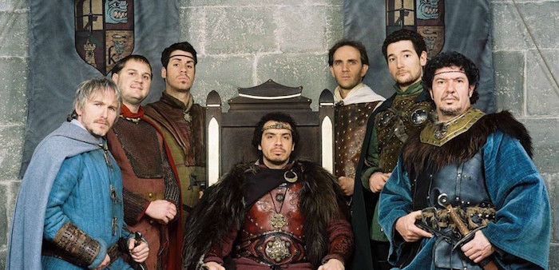

Enjeux de cette rétrospective
Lorsqu'une équipe travaille depuis de très nombreuses itérations, la cérémonie de la rétrospective peut devenir fastidieuse : format toujours identique, impression de tourner en rond... Pour que cette réunion ne soit pas ressentie comme une corvée, il est important d'en renouveler régulièrement la forme, et, dans les limites du possible, le fond.
Cette variante de la Table Ronde a pour but d'essayer d'impliquer les membres de l'équipe au-delà de la réunion. A l'issue de la rétrospective, ils devront avoir formé des binômes de chevaliers en vue de réaliser une quête (et un trinôme si le nombre de participants est impair). (Et si les participants sont fans de Kaamelott, c'est encore mieux).

Préparation de la rétrospective
Vous aurez besoin de : un tableau des post-its et des feutres des papiers sur lesquels sont inscrits les noms de personnages de Kaamelott une boîte / un chapeau pour y placer les papiers pliés en quatre * un QCM portant sur la série Kaamelott
Déroulement de la rétrospective
Sur un tableau blanc, préparer trois colonnes dans lesquelles les participants viendront placer leurs post-its : + On en a gros ! : Qu'est-ce qui ne va pas ? + Le Graal : le but à atteindre (au niveau de l'équipe, ou au niveau personnel) + Excalibur : ce qui peut aider l'équipe à atteindre le Graal'
Distribuer le QCM aux participants, qui ont toute la durée de la rétrospective pour le remplir. Eventuellement, proposer une récompense pour celui qui a le plus de bonnes réponses, mais le but est principalement d'instaurer une aura de bonne humeur généralisée. Comme ce sont des questions à choix multiples, même les personnes ne connaissant pas la série peuvent répondre correctement.
Ensuite, la réunion se déroule de manière classique : une fois tous les post-its placés au tableau, on vote pour les sujets dont on veut débattre durant le temps qu'il reste. Avant de lancer les discussions, chacun pioche un personnage de Kammelott et on forme des binômes de chevaliers (par exemple : Perceval et Karadoc, Yvain et Gauvain, Guethenoc et Roparz'h, Merlin et Elias...). Chaque binôme devra trouver une quête à réaliser pour la quête du Graal, avant la prochaine rétrospective, que ce soit pour aider l’équipe à atteindre un des Graals déterminés pendant la réunion, ou pour faciliter le travail de l’équipe, améliorer l’ambiance...